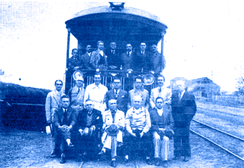

Rotary Club de Bauru
Ano rotário 2025-26 - Plano de Atividades
Clubes Afiliados e Netos do Rotary Club de Bauru
CLUBES FUNDADOS PELO
ROTARY CLUB DE BAURU
- 1940 - Rotary Club de Campo Grande - MS
- 1940 - Rotary Club de Corumbá - MS
- 1940 - Rotary Club de Botucatu - SP
- 1943 - Rotary Club de Lins - SP
- 1952 - Rotary Club de Pirajuí - SP
- 1955 - Rotary Club de Agudos - SP
- 1965 - Rotary Club de Duartina - SP
- 1969 - Rotary Club de Bauru - Oeste - SP
- 1973 - Rotary Club de Piratininga - SP
- 1973 - Rotary Club de Bauru - Norte - SP
- 1987 - RC de Bauru - Terra Branca - SP
- 1990 - RC de Bauru - Parque das Nações - SP
